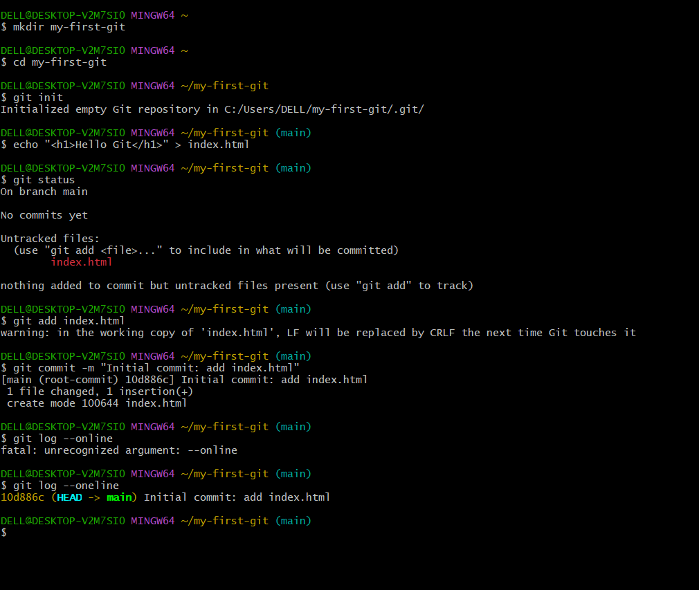
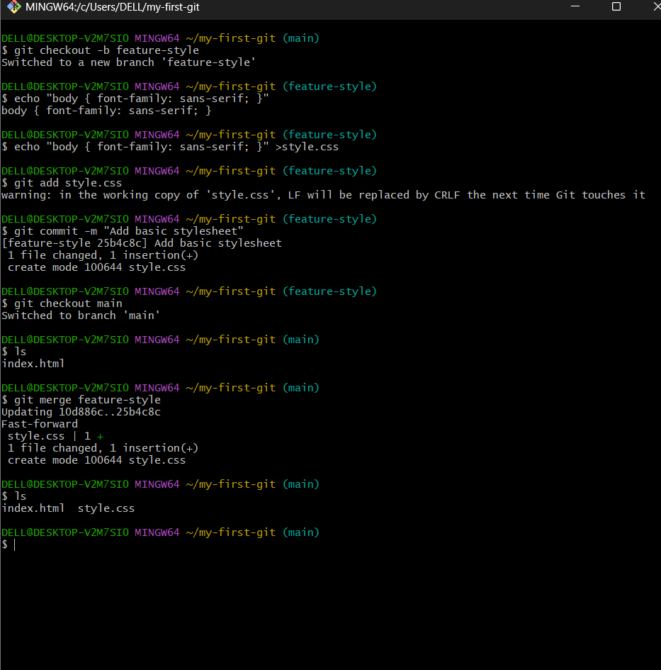
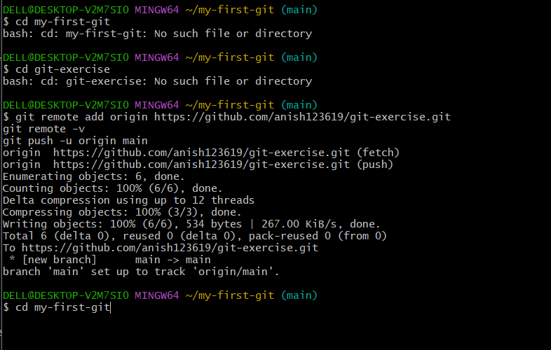

Git Exercises
Three hands-on exercises covering the basics of Git: creating a repository, branching and merging, and pushing to GitHub.
Exercise 01 Creating the first repository “my-first-git”

Exercise 02 Creating a branch and merging it

Exercise 03 Pushing a repository to GitHub
